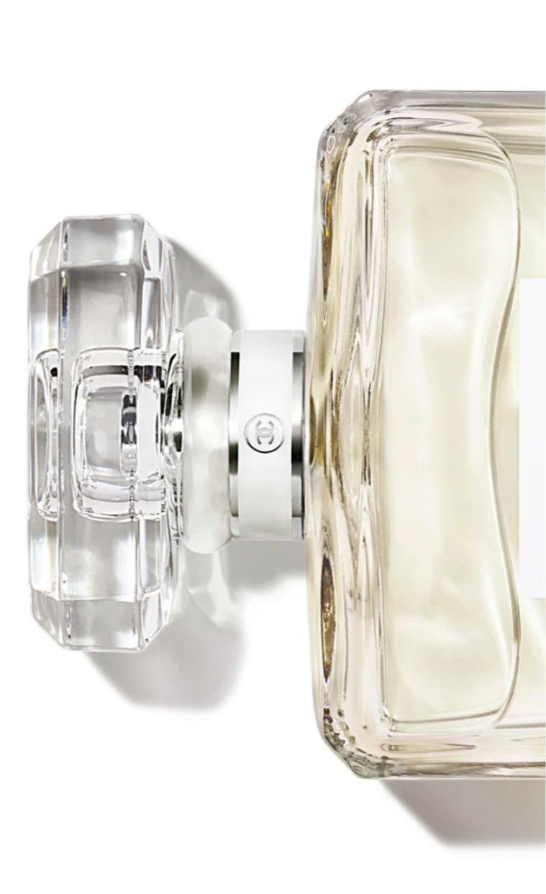
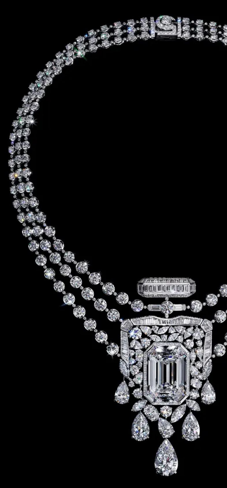

The Iconic CHANEL N°5 Celebrates 100
Years With a Magnificent Work of Art
To honor 100 years of the luxury brand’s iconic CHANEL N°5 fragrance, Patrice Leguéreau, director of the Fine Jewelry Creation Studio and master jeweler, has imagined an exquisite and incomparable collection of 123 pieces, the “Collection N°5.” As part of this assemblage, he was inspired to create a singular necklace, a work of meticulous craftsmanship and beauty that interprets the eternal mystery of the legendary perfume.
This boundary-breaking scent — which combined more than 80 ingredients, including
synthetic aldehydes — was a huge departure from the one-note floral concoctions popularized by society women of the
time. And its name? A tribute to Chanel’s favorite number: 5. As fate would have it, her favored scent medley was
Beaux’s fifth sample. And the visionary couturier would extend her luck by introducing the avant-garde fragrance,
which ultimately became a best-seller worldwide, on the fifth day of the fifth month of that year.
In 1932, Chanel once again shattered the codes of French High Jewelry with her one and only collection in platinum
and diamonds. These “Bijoux de Diamants” introduced new ways of wearing adornments and took jewelry into another
realm.
“Gabrielle Chanel approached the universes of fragrances and jewelry with the same visionary values, focusing on audacity and the quest of excellence. I wanted to rediscover that creative gesture with this collection.”
The classic glass flacon features elegant, clean lines with a monochromatic white label and chic black lettering.
Leguéreau was inspired by the perfume decanter’s beloved design and envisioned a magnificent necklace that shared
its silhouette.
To create a visual impact worthy of the fragrance’s culture-defining legacy, Leguéreau had the idea for an
impeccable, Flawless Type IIa 55.55-carat center diamond.
“This is an unprecedented approach. We started with a rough diamond that we had cut, not to make the biggest stone possible but to obtain a perfect octagonal diamond weighing 55.55 carats.”
The gem’s weight is a calculated homage to the designer’s lucky number and is inspired by the shape of the bottle’s
stopper, a design that reflects the famous Place Vendôme in Paris — also home to the Ritz, where Chanel resided.
The revolutionary fragrance’s heady and alluring aroma encompasses a highly complex blend of aldehydes, including an
intricately assembled mélange of delicious florals like ylang-ylang, May rose and jasmine. They are layered over a
warm, woody base of vanilla, vetiver, amber, patchouli and sandalwood. To bring these elements to life, the distinct
bottle-shaped motif of the necklace features tailor-cut diamonds of varying proportions. Each stone represents a
separate floral note of the eau’s unique bouquet. The striking gems are complemented by a waterfall of pear-shaped
diamonds that evoke the liquid effect of perfume drops.
The most potent asset of the venerable scent is its sillage, the floating essence a perfume leaves as its wearer
moves across a room. And just as CHANEL N°5 leaves an indelible impression that has influenced our culture over the
past 100 years, this exquisitely curated necklace was designed to be a long-standing and grand honor of the
fragrance’s centennial. The eye-catching gems of the 55.55 necklace diffuse light like a breezy, ethereal aroma. Its
sprays of scintillating stones summon thoughts of the fragrance’s dazzling olfactory burst. Each jewel was
hand-selected to be reminiscent of the scent’s complexity, collectively giving the statement piece unparalleled
radiance.